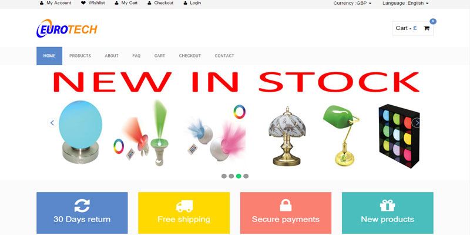

About Me
A dedicated developer & designer currently studying web development degree at Manchester Metropolitan University. A hardworking person who is always willing to try his hands and develop on his web desiging skills and learn the different technquies that can be used on the projects. Besides coding, he loves to be involved in sports activites as it is important to be fit and healthy.
Looking for a dedicated developer? Why Not Have A Look At My CV...
Download CV
Skillset
HTML 5 | Fluent
CSS 3 | Fluent
PHP & MYSQL | Basic
SASS & Github | Next on line
Adobe Photoshop | Experienced
Microsoft Office Suite | Fluent
@ More skills including the above
Education
Manchester Metropolitan University, Manchester
BSc (Hons) - Web Development
Lancaster University, Lancaster
BSc (Hons) - Computer Science
Priesthorpe School, Pudsey, West Yorkshire
A Level's- in ICT & Business Studies
9 GCSEs (A-C)
Short-Term Goals
Professional portfolio website created at a high standard.
Aim to graduate with a first class honors degree.
Long-Term Goals
Find a job in the web field with a well established orgainsation
Develop my web design skills and work on eBay and Amazon.
Develop website and manage projects for established businessses.
My Portfolio
Some of the work that has been done over the past years is group work and personal portfolio. Provides how I have developed my web designing skills over the past years. The image on the right is something that was done in the first year using photoshop.
Why not check out some of the work that I have completed over the last 2 years.
Blogs
Sports In Manchester
Developing Info Comms Group Project
An attempt to provide staff and students an insight of different sports available around the campus & Manchester. The website had video clips of different sports that students might be interested in and the purpose of developing the website was to get more students to join in with the sports system and be active.
The site introduces students to some of the gold medallist champions who were interviewed to give brief insight about their journeys in the sports field. The site is produced to provide relevant information about ways to join, the fees and the way that students can get in touch with the different clubs. The project was a great success as we as a team were able to deliver our message of how important sports is in real life.
Why not view the site here?Group Work
Journalism, Information & Communications Site
Website Development Group Work
An attempt to a responsive website created as a group however I had most of the coding skills so the website was completely developed by me. The other members of the group had good research and content writing skills so as a group we split our roles which suited us most and we produced a high standard work.
The website was about our Journalism, Information & Communications department so we had to come up with an easy to access site for students compared to our current department website. While working on this site, it has helped me to develop more as a developer as well as gain in some of the other skills which includes research and content writing.
Why not view the site here?Group Work
First Year Individual Website Work
First work on creating website
A student website created to help us work in a team and also develop on some of the skills other members in the team had. As a member of the team we had individual pages where we had to show some of our photoshop and digital skills.
Coding for the first time was a bit difficult however most of the code was provided so understanding the code and inputing some of our own skills gave us a reasonable output.
Eurotech Cash & Carry Limited
Year 3 Project for Cash & Carry business.
As a student who would be graduating soon, we were set tasks on whether to do a research or a practical project for our 3rd and final year. Since I was interested in designing a website, I decided on creating a website for a Cash and Carry business which is located in Manchester. The business has been running since 2013 but it required a website to increase the number of customers/their sales. Hence the company showed faith in me and came to a conclusion to give me the task of creating a fully responsive website for their business as well as the customers.
During the whole process there were positives and negatives that became a hindrance to the work that was set to produce for the company such as when I first started to create a website, it did not seem quite attractive hence I thought of changing the whole layout completely within 2 weeks of time to showcase my web designing skills as well as to make the company proud so that they don’t lose their faith in me. Overall this project helped me to gain new knowledge about different tools and techniques used to create a fully responsive site as well as include some new skills onto my CV.
Why not view the site here?Year 3 Project
Polaroid App
UXD App Project
Since I had never created an app. before, this was my very first attempt of creating a professional app however due to lack of skills I was not able to produce what I was expecting and the app wasn’t up to the standard as I expected. However during this whole process it helped me to go a bit further by adding a new skill of creating app. The module overall has helped me in working on my UXD skills and creating new apps for clients and so far I have seen a good improvement compared to the first one which I had done. Some of the material during the app created is illustrated below.
Why not also look at the app and play around with it?Click Here to view the app
Gridset Report 2014
Written By Bharpinder Singh Sekhon on 10 November, 2015
As per the 2014 gridset responsive report, it showed how rapidly the web industry has changed as responsve is something that every organisation requires now a days.
"In the last years, namely november 2010, visitors to web-based email sites declined 6%, but the number of users accessing their emails on a smartphone grew up by 36% [comScore, 2011]. And here are some more numbers: traffic to mobile websites in 2010 grew 600% after tripling between 2009 and 2010 [Daly, 2010]."
The above statement by comScore Inc & Daly Vanessa shows that over the past years reponsive website has become really important as more users are on their mobile while viewing different site. Hence I completely agree with their statement of how important it is to ensure that a site create supports the mobile devices accurately.
The report is done annually by Gridset to see what results they get from the participants about the challenges and difficulties that they face when doing responsive web designs. They have further looked at variety of tools and articles that show how responsive design has evolved over the years. After reading through the report, it showed that there have been quite of lot of changes over the last year. They have provided a comparison from the previous years which helps us to interpret the results and how quickly the web industry is growing. However on the other hand there is a limitation to the report as they provide mostly facts which leaves the user to provide their own point of view which I think isn’t bad as they will get to improve on the report in the following year by getting feedback from the users.
"Every so often, something comes along in our industry that defines a moment in time: Jeffrey Zeldman’s Designing with Web Standards, or Doug Bowman’s Wired.com redesign. This book is one of those moments. Insightful, witty and practical, Responsive Web Design points us in the direction of a new web [Marcotte, 2011]."
Another quote that was quite good was by Jeffrey Zeldman which was included in Ethan Marcotte book on reponsive web design. It gave an insight of how new techniques are introduced with the industry and how quick time is changing.
It was also the first time that project and business managers were represented in the survey undertaken in 2014 Gridset responsive report. This showed that people from other industry groups who are business or project managers are interested in responsive design. In my prospective this is not surprising as all organisations that currently have a website don’t quite look at whether it is responsive or not as they have good amount of customers however since responsive design is now taken into account by these organisation this shows how efficiently web technology is growing.
As per the Gridset report one of the biggest concerns for a responsive web design was optimization. "Optimization rose to become the top Responsive Design concern, up 11% from 2013 to 48% in 2014."[Gridset, 2014]. The concern about optimization was that it took long time for images to load which affected the performance web industry. Since responsive is quite important for the web industry, it needs to have different connection speeds on different viewport sizes.
So the question stands at why responsive? The answer as stated in both Gridset report and in my opinion is that all organisations now require a responsive design as browsers are rapidly growing support for APIs and developers are directly working with apps such as invision which provide prototyping for web & mobile. In my opinion the gridset report and some of the articles that I have read provide an insight of how responsive design is stretching further into the operations of organizations.
Even when web is changing rapidly, there still seems to be a large number of interest in standard website as some organisations want a website which can provide their customers a benefit of purchasing online. Taking this into account we now have a range of devices and different platforms which are usually compatible with responsive designs and are able to provide the required content. Another question is that whether the apps can handle all the programs and content. In my opinion even if a developer designs an app, the industry still looks out for website hence it looks that responsive design is something all developers will work on.
Resources
comScore, Inc. [2011]. Email Evolution: Web-based Email Shows Signs of Decline in the U.S. While Mobile Email Usage on the Rise.
Link to article: http://www.comscore.com/Press_Events/Press_Releases/2011 [Accessed 12 Nov,2015].
Daly, Vanessa [2010]. Smartphone market drives 600% growth in mobile web usage.
Link to article: http://news.bango.com/2010/02/16/600-percent-growth-in-mobile-web-usage/[online, Accessed 10 Nov,2015].
Ethan, Marcotte [2011]. Responsive Web Design
Link to article: http://abookapart.com/products/responsive-web-design[online, Accessed 10 Nov,2015].
Gridset, McGrane, K., Marcotte, E., Chimero, F., Ford, N., Rodriguez, J., Portis, E., Robertson, S., Gardner, L. D., Maslen, T. and Kadlec, T. (2014) Gridset · Responsive Report 2014.
Avaliable At: http://2014.report.gridsetapp.com/ [Accessed 31 Oct,2015].
Designing Responsive Portfolio
Written By Bharpinder Singh Sekhon on 7 November 2015
It's not an easy job to design a fully responsive portfolio, however like all developers you have to try your hands on new techniques to stay along technology. A major transformation in the industry came by the appearance of responsive design. Therefore to create a responsive portfolio it is important that various choices and decisions on the variety of tools and techniques which can be used as well as following the integrated according to the brief provided. Let’s start with how easy was designing a responsive site, well it wasn’t as easy as I thought as it required different tools and techniques as well as some research on responsive designing that could then be implemented to create a responsive site.
While writing another blog of gridset report about responsive designing, I found a useful book about Responsive Web Design by Ethan Marcotte which has some guidance on primary ingredients of responsive web design. After reading through and skimming a few pages, I wanted to know more about how to implement some of the tools and techniques such as flexbox, media queries and grid-based layout onto my portfolio. One of the main technique while designing a responsive site was the navigation as it was important that the navigation is not an old site but a responsive one with an icon while the site is viewed on small screen devices. A really good site CSS-Tricks provides some easy guidance for first timers as well as professional developer on variety of tools that include flexbox, navigation, etc which they can then implement on their websites. While doing a bit of research on Google I came across an article by CSS-Tricks (online, 2012) titled “Responsive Menu Concepts” which provided an insight that a responsive menu without the use of JavaScript would be suitable to increase the performance of the site. Since for the portfolio I required a Flexbox, I went on the CSS-Tricks site and found another article titled "A Complete Guide to Flexbox" (Coyier, 2013) which provided step by step guidance and explained in detail how to align and stack flexbox keeping in mind that it is responsive. In addition it was also important that accessibility was kept in mind such as implementation of skip-links, using "WebAim" (online, 2013), and aria roles, using “html5doctor” (Faulkner, 2014), were researched as modern browsers require aria roles and skip links as well as it is required for people with disability to access the site efficiently.
The next phase in the portfolio was the design phase. Since designing was vital as it provided an insight about how the site would look, the words Information Architecture and usability came in my mind. The first thing I did was do a low-fi wireframe on a piece of paper as this would help me to design it in professional software such as Axure (online, 2015) that I was aware of from the past year or try my hands on different software such as Balsmiq (online, 2015). Since I had used Axure and was confident at using it, I tried my hands on Balsmiq as I thought it has quite a lot of different tools to offer which would provide a good description of the site. Hence I provided a structure of home page appearing in different platforms such as desktop, tablet & mobile.
After finishing with the designing and research phase, it was now time to do some coding to embed all elements into the website. Using “Notepad++” (online, 2015) the first page was developed which was the homepage. Even when designing the homepage there were various challenges that were to be kept in mind such as the height, width, margins and padding of all elements i.e. logo, navigation bar, images as it was important these responded with each other efficiently and supported all modern browsers. Also since flex-box was used to provide some of the latest work done, the challenge that came in place was the text as the box wasn’t providing the right text with correct margin when using percentage instead of pixels. However doing a bit of testing by resizing images, changing the positions and embedding content i.e. typography and responsive images to all page, a fully functional portfolio site was developed.
After designing all the pages, it was now time for the last phase which was testing the website to ensure it validated effectively and provided easy accessibility. To check that the website worked on all platforms and different browsers cross browser testing was initiated and the result was positive as it worked efficiently on all browsers. One of the issues that occurred during this was in IE8 as the flexbox wasn’t functioning properly however it was manageable and didn’t affect the responsiveness of the site. The site was then validated using “W3C Markup Validation” (online, 2015) and “W3C CSS Validation” (online, 2015) to ensure any errors within the HTML and CSS were corrected.
Now was the time to launch the actual website after doing all the research, design, development and testing for a few good weeks. Using the server provided by Manchester Metropolitan University the site was hosted with a well organised structure. So designing a responsive portfolio is a challenge in itself however it has fun elements to it as well as it provides the developer with different tools and techniques that they have not used.
Resources
Axure.com, (2015). Interactive Wireframe Software & Mockup Tool [online]
Available at: http://www.axure.com/ [Accessed 28 Oct. 2015].
Balsamiq.com, (2015). Balsamiq. Rapid, effective and fun wireframing software. [online]
Available at: http://balsamiq.com/ [Accessed 30 Oct. 2015].
Chris Coyier, (November 3, 2015) A Complete Guide to Flexbox. [online]
Available at: http://css-tricks.com/snippets/css/a-guide-to-flexbox/ [Accessed 01 Nov. 2015].
CSS-Tricks: Responsive Menu Concepts. (2012) [online]
Available at: http://css-tricks.com/responsive-menu-concepts/ [Accessed 01 Nov. 2015].
Faulkner, Steve. (June 21, 2014). Using ARIA in HTML | HTML5 Doctor. [online]
Available at: http://html5doctor.com/using-aria-in-html/ [Accessed 03 Nov. 2015].
Jigsaw.w3.org, (2015). W3C CSS Validation Service. [online]
Available at: http://jigsaw.w3.org/css-validator/ [Accessed 14 Nov. 2015].
Ethan, Marcotte [2011]. Responsive Web Design
Link to article: http://abookapart.com/products/responsive-web-design[online, Accessed 10 Nov,2015].
Notepad++ (2015). Notepad++ Home [online]
Available at: https://notepad-plus-plus.org/ [Accessed 10 September. 2015].
Validator.w3.org, (2015). W3C Markup Validation Service. [online]
Available at: http://validator.w3.org/ [Accessed 14 Nov. 2015].
Webaim.org, (October 25, 2013). WebAIM: "Skip Navigation" Links. [online]
Available at: http://webaim.org/techniques/skipnav/ [Accessed 10 Nov. 2015].
Changes Done to the Website
Written By Bharpinder Singh Sekhon on 17 January 2016
The first thing that I thought of after getting a feedback was to change the layout of the site completely because while looking at my peers and industry websites, I didn't somewhat like the work that I did for the site as I thought that the website which I just created was just a basic one that could also be done by a first year student. Therefore to showcase my technical skills, I changed the site completely to one page layout.
Why not have a look at the changes made before reading my blog?Changes Made Documentation
After getting feedback for my personal portfolio by my tutors, they had specified that I needed to improve more on my writing skills as this was one of the issues that the tutors came across after reading the first 2 blog posts that were submitted in. In order to improve on this, I read through the feedback provided and noticed that there were reasonably a lot of grammar mistakes that needed correcting and that the work needs to be proof read hence I have ensured that on my other blogs I avoid the same grammar mistakes and proof read the work again and again to make sure that it is up to the mark. Along with this I also changed my first 2 blogs as well. On my second blog post about creating responsive website, the feedback provided by tutors was that I focused mostly on resources that were found and not on how the website was actually built. So in order to make improvements on this, I have provided more detail about how I have made these changes in a documents which can be downloaded from above. I have also mentioned on my other blogs the projects that I have done and how they were completed.
In addition to the feedback for the blog posts, the tutors thought that the site missed opportunities for more Meta data and keywords that could be used to make the website more reliable. So looking at the website and the feedback these changes were made and more Meta keywords were included to ensure that when the site is searched, it is easy for the users to find what they intend to look for. Another point that was raised during the presentation of the site were the images, as the tutors felt that some images could have a large canvas size or a link to the previous year work. So to improve on this, there were links added to ensure that when a user visits the site they can go on to the developer’s previous work and look at how he has developed. Last point that had to be worked on was the navigation as it fell apart on iPad which led to some of the text and screen overlaying. To improve on this, more research was conducted on responsive navigation and appropriate alterations were made.
Once receiving the feedback from the tutors, the site was presented to one of the peers to which they stated that I needed to improve on my grammar in order to gain more marks and ensure that the site was offering high quality standard. It is equally important to understand and work on the feedback which is provided even by the peers for example here, I was suggested to have a darker border around the image in order to provide in more detailed information about the work. They also suggested that a link to previous work would provide an insight to the user of the ways in which the developer actually developed his/her technical skills.
Overall, after getting the feedback both from the tutors as well as the peers, I made sure to make those essential improvements to ensure that the site is created to a high standard and is showcasing the standard to a whole new level. All of the above improvements were done to meet the user’s requirements and ensuring that the site is resourceful. The grammar for blog posts were given high priority as writing reflected what the developer had to say about the site.
Why not look at my old portolio site to see the different?Old Portfolio
SASS: The Learning Process
Written By Bharpinder Singh Sekhon on 02 March 2016
SASS is an extension language to CSS. It has more features than any other CSS extensions out there. Technically it is an extension that lets you add nested rule like variables, mixins, selector inheritance and many other features. SASS requires a user to understand the variables that need to be incorporated within the site without having to change different sections on the CSS template. So in case a user just wants to change the background colour of a particular box, he needs to change the variable from the SCSS file. SCSS is just another syntax of SASS version and is a superset of CSS3 syntax. So it just means that any CSS3 stylesheet which is valid is also a valid SCSS file.
Before the start of this project, I had no idea about SASS even though I was fluent in CSS which helped me to learn SASS easily. SASS was something that I had wanted to do after looking at different ideas such as CSS animations, Parallax Web Design and many more to name.
The research began on how to use SASS and where it could be used to make your site look more professional. During the research it gave me a lot to information on the way SASS is implemented within CSS as an extension tool. One of the articles about how to use SASS was for beginners, this provided me with quite a lot of help on how to use SASS and the different mixins within my coding to improve the site. (1st Web Designer: 2016: online).
Another article found was Why SASS? This is what the writer had to say at the beginning of his article: I was a reluctant believer in Sass. “I write stylesheets by hand! I don’t need help! And I certainly don’t want to add extra complexity to my workflow. Go away!” (Dan.C, Why SASS? November 13, 2013, Online). One of the things that I noticed by reading through this article was that it stated CSS is hard, as the writer had his point of view on CSS. The writer illustrated that CSS was hard to understand as it was important to know what each property in the stylesheet does, which browser it supports and other things that made CSS a bit more complicated.
After reading a bit further down, it started to make more sense about why CSS was harder to understand and how SASS could be used to make the stylesheet more reliable with the use of SASS elements such as variables, mixins, nesting styles, partials and many more to name.
It was now time to do some coding on the about me page on my old portfolio. Before I started to use SASS on my old site, I thought of testing it on my current site first to see if I could change the about me section however during this process of learning, my site started to overlap so I went back on my old portfolio site and demonstrated my skills on that website. Another difficulty that I faced when learning SASS was to understand what each element does so that I was aware of how to make changes on my old portfolio site.
To find solutions to my difficulties, I went on to Lynda.com and searched for SASS and it had a video tutorial for (SASS Essentials, Lynda.com: online). I found this tutorial quite useful as it had step by step guidance of how to use SASS. To view my learning progress and how I have changed my site you can download the learning SASS document below as well as the site to see these changes.
Why not have a look at my skills demonstrated here?Downoad Document
To view the changes on my site using SASS... View it here
Resources
1st Web Designer, 7 February 2016 [online]
Available at: http://1stwebdesigner.com/learn-sass-tutorial/ [Accessed 22nd February 2016].
Cederholm, D Why SASS?, 13 November 2013 [online]
Available at: http://alistapart.com/article/why-sass [Accessed 22nd February 2016].
Sass Essential Training, Lynda.com [online]
Available at: http://www.lynda.com/Sass-tutorials/Sass-Essential-Training/375925-2.html?org=mmu.ac.uk [Accessed 25th February 2016].
Sass Basics [online]
Available at: http://sass-lang.com/guide [Accessed 28th February 2016].
SASS: The Evaluation
Written By Bharpinder Singh Sekhon on 11th March 2016
Throughout the SASS learning process, I have learnt and gained a lot of new skills such as the use of variables in style.scss file rather than using my style.css file. Since this is an evaluation about how I met my aims and objectives, I would also provide a few screenshots of the changes done to display that I have met these aims and objectives and developed on my SASS skills.
Since SASS continues to have an advantage over CSS due to its extension and features that it offers, it still is unlikely to leave back the likes of CSS as it is still widely used in the web industry. However, SASS on the other hand is a great tool for web designers, as they only need to change one line on their stylesheet template for a specific text or layout without having the need to create more than one div classes.
Overall I believe after using SASS that it is a more compatible tool than CSS as there is a bit more to do at first however once you are finished with coding on style.scss template it automatically includes the code on the css stylesheet. To look at the how this is done, please revisit my learning process blog about SASS as it shows my demonstration skills. Using SASS as a first time user can be a bit complex however as you go along by watching tutorials and doing research you could be a professional in using SASS.
The main aim for this self-initiated project to use the different elements and compile it with my CSS to redesign bits and pieces of my site as most employers now look at SASS as an advantage in an individual due to the fast growing technology. After looking back at my aim, I can say that I have tried my best at meeting my aims and objectives and have changed the required about me page using SASS. This can be viewed in the learning process at the bottom of the page with a link to the SASS implemented site.
Throughout the learning process, I have learnt and developed on my SASS skills and feel confident in using the different elements provided by SASS to implement my site to a high standard. Overall learning SASS has helped me to include this as one of my skills on my CV as well as use it more often in the future. In addition, SASS supports all browsers efficiently so even if you are not familiar with the technical side of SASS, you could still implement it on your site to make it look more professional.
After doing this evaluation and doing a bit of coding through my learning process, I believe I have achieved my aims and objectives as I have been able to demonstrate my SASS skills by implementing it on my old portfolio to ensure that if anything goes wrong I can make undo the changes without having to create a mess on my new portfolio site.
In addition to this I will therefore be implementing SASS in more projects in the near future. I will also keep on improving my SASS skills to become fluent and use it more often than CSS.
Git: The Learning Journey
Written By Bharpinder Singh Sekhon on 3rd March 2016
GIT when first heard, I was like what is Git? Is it some sort of software or new techniques to HTML and CSS coding. However I was all wrong as doing a bit of research about Git helped me to understand Git was one of the approaches of managing projects which could also be used for my other self-initiated project of working with SASS to improve my site. Through this project my aim is to learn how to use Github as a software to share ideas with other people and learn different elements such as collaborative code review, repositories and working with local files.
Since this was the first time I was using Git, it was important to know the basis so I did a bit a research and looked at a few tutorial of Git for beginners. One of the tutorials that I looked at was from Lynda.com (Git Essential Training, 24th November 2012, Online). This tutorial provided a basic understanding of Git and how version control is used. In addition to this it had a step by step guide on how to use git and create new repository as well as performing my first commit.
My additional research included looking at a few articles such as (Lauren, O, Github for Beginners: Don’t Get Scared, Get Started, Sep 30th, 2013 Online). This article was really useful as the writer explained about all git commands and how these are used. The author had a part 2 article where she provided a briefing of how to perform your first commit and look at the changes on Github.com through the version controller.
Once all the research was done it was now time to get my hands on doing a bit of managing files with the help of Github desktop version. During the research I found out that anything that you change on your coding, automatically appears on Git which helps you keep track of your changes and progress towards managing files. In order to ensure that I don’t mess up my portfolio site, I thought of changing the main CSS file and look at my progress through the Github Desktop Version and check if anyone in the industry was also checking the code to help me improve it to a high standard.
Some of the commands that I got aware of were git init command which created a new repository, git config command that configured the user login details so that you could track you file more easily. There were many other commands which I learnt and have explained it on my demonstration file attached below.
Finally the knowledge gained through research and tutorial about using Git has ended my learning process of using Git and now it is time to make a few more changes to my file and check my progress regularly to get an insight of how efficient and reliable Git is for web designers.
Why Not have a look at my basic learning skills of Git....
Download Git Basic Learning Process
Resources
Orsini, L, Github For Beginners: Don't Get Scared, Get Started, 30 September 2013 [online]
Available at: http://readwrite.com/2013/09/30/understanding-github-a-journey-for-beginners-part-1 [Accessed 5th March 2016].
Orsini, L, GitHub For Beginners: Commit, Push And Go, 2 October 2013 [online]
Available at: http://readwrite.com/2013/10/02/github-for-beginners-part-2 [Accessed 5th March 2016].
Dudler, R, git - the simple guide, [online]
Available at: http://rogerdudler.github.io/git-guide/ [Accessed 6th March 2016].
Skoglund, K, Git Essential Training, Lynda.com [online]
Available at: http://www.lynda.com/Git-tutorials/Git-Essential-Training/100222-2.html [Accessed 8th March 2016].
Git: The Evaluation
Written By Bharpinder Singh Sekhon on 14th March 2016
As far as Git is concerned, I am still working at this skill as during the learning process I found it quite difficult to use Git. So in order to become perfect at using Git, I will still need to work more on this project and gain the skills and knowledge by watching tutorials and doing a bit more research.
Since my aim for this project was to gain knowledge about using Github to share ideas with other people and using different elements, I believe I have achieved the basics by using the git elements to create new repositories and working with the file by making changes and committing these change to check my progress. However I believe I still need to develop on this skill as I am not confident enough at using this software and this is what some industries look at from an individual. So before I get employed I will ensure I am perfect at Git and can manage projects more efficiently and more confidently.
At the start of the project my objectives included using Git as a technique of managing and controlling the project. I have achieved this objective as I have learnt about managing my project from desktop version and sharing it with others so they could contribute towards the project and provide improvements. This has also helped me to include Git as one of my skills set on my CV and now a days some big organisations do look out for version controllers as one of your technology advantages. So having learn Git would be a bonus for me as this would help me to find a job much easier.
My second objective for using Git was to monitor feedback provide and fix any codes to ensure a high quality work is provided. I believe that this objective is not fully met as I have recently uploaded my portfolio codes, so in order to get the relevant feedback I would need to wait for my peers and organisations to send some feedback on my code which I can then implement and make a commit to provide a high standard work. So far I have had a feedback from my peers about making the writing in large font to ensure users can read my text more carefully. I have therefore changed the coding on my style.css sheet and have done a commit on Github version to provide my progress towards this self-initiated project.
Here my learning journey and evaluation of using Git as a self-initiated project has come to an end, I believe that I have fairly met my aims and objectives and will work on my version control skills which I can then use to manage my future project more efficiently.
Feel free to have a look at my Github work and contribute to it...Github Work
Designing Responsive Wesbite For Eurotech Cash & Carry Limited
Written By Bharpinder Singh Sekhon on 11th March 2016
My recent work included creating a responsive and functional site for Eurotech Cash & Carry Limited which is located in Manchester. During this project there were lots of ups and downs as it was vital that this project is completed on time and to a high standard. However even though the website wasn't fully functional due to limitation of time, I had created some of the functions that would incorporate within the site and the client could use this site to make it fully functional for its customers. The whole aim for this website was to develop a responsive site to raise awareness of the company and increase the number of customers.
This included a lot of development work and meetings with the client to brief them and get the requirements to ensure the project is a success. The first phase during this project was to meet with the client and get them to sign off the consent form to ensure they were happy for me to create a site for their business. The brief was explained to the client clearly which lead to them confirming that I could carry on with the project without having to think over it again.
Once the first meeting was done and aims and objectives were discussed, I was solely handed with the responsibility to develop a fully responsive and functional site for the business, so straight away I started to work on my research skills by doing competitor analysis, wireframes, mood boards, personas, project plan, expert review and other documents that would be required to ensure this project was a success.
The first step initiated by me was to create a project plan timescale so that I could keep track of my work and give myself a deadline date for a particular task. Once this was done, it made my life a lot easy as I could then work on the documents much quicker than I would have without a project plan. Below is a brief about the ways my project was carried out and planned and it also states that ways it helped me to keep a track with my project.
The next phase of development was to do a mood board which would have helped me to decide the best bits from different website that I could implement on my site when building it. Once the mood board was done it was now time to look at the business competitors to look at their website layout and what they had to offer its customers in terms of grabbing customer’s attention to view their website and buy products. Competitor analysis provided me with different elements that I reasonably liked and disliked about the competitor sites such as in terms of efficiency after looking at the sites, it was important that the navigation bar should be at the top to help customer locate the section they are looking for easily. On accessibility side of the site it was important to ensure I met the WAI guidelines and that plug in is avoided when accessed by the users. There were other factors that needed to be considered to ensure that the website worked on all devices without any errors.
After doing the mood board and competitor analysis, I did a site plan and wireframes so that I could show how the layout of the site would look like once it’s completed. Once the wireframes were done, these were then shown to the client so that they could tell me if any improvements were to be made or how they would want me to design the website for them so that it is up to their standard. However at first the client decided to go ahead with the design provided but during the last stages of this project, I and the client discussed and decided to change the layout as the old one didn't look much professional.
Looking at the changes done to the site....View it here
Finally it was time to do some coding and build a responsive site that would help the business to increase its customers. Once half of the website was done, I did a bit of user testing to find out how easy it was for users to visit the site and work through it. Like stated above about changing the layout, this occurred after the user testing session as the old site wasn't attracting viewers and they provided feedback to change the layout in order to make it look more professional. Once the changes were done, the site was uploaded live so industries and other people can view my latest work.
Why Not have a look at my development report...
Download Report
An App for Professional Photographers
Written By Bharpinder Singh Sekhon on 11th March 2016
The idea of creating an app which would provide professional photographers to show their skills came across as one of the team members was interested in photography and after doing a bit of research we couldn't find any decent sites that were for professionals, so as a group we thought of creating an app for professionals.
Once the idea was finalised it was now time to start planning the next steps by creating wireframes and storyboards that show how the app would look like and how easy users can operate it. The first phase here was to create hand drawn wireframes so that I could provide my ideas and share it within the team and could get their opinions. Once this was done and the ideas were shared we started to build our hi-fi wireframes on Axure or a similar software to this such as Photoshop. Since this was my first time creating an app, I worked on creating designs both on Photoshop as well as Axure to show my skills and demonstrate ways in which each of the sections will operate. Photoshop just provided some images that showed the sections on the app however Axure was a more advanced as I could actually do live testing with the user and get their feedback.
Once the full project was completed, it was then uploaded on invision so that other users can access the app and provide me with their feedback on ways to improve and make it more reliable if the app was to be created again. Here my journey of creating apps came to an end and I hope to do more app designs in the future to improve my app developing skills.